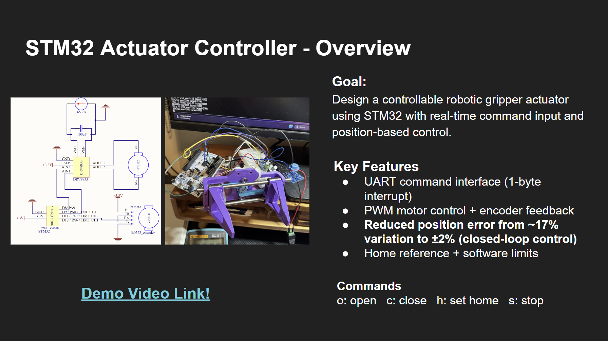
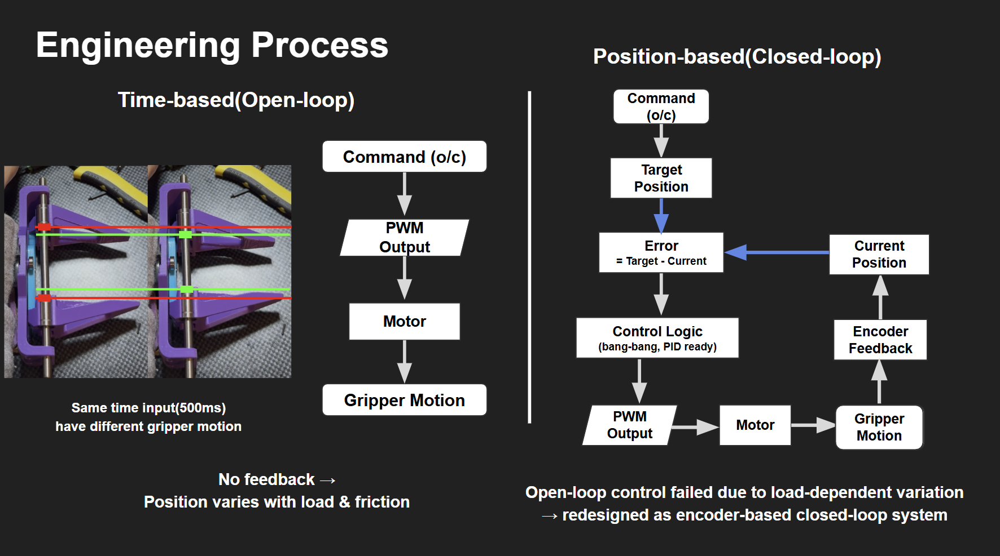
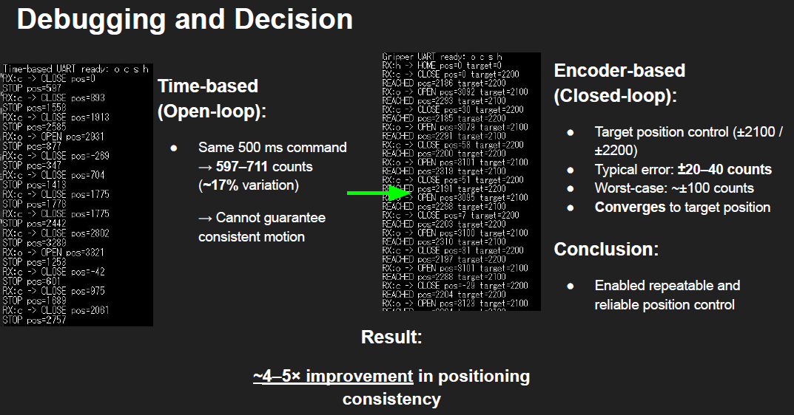

Goal
Design a controllable robotic gripper actuator using STM32 with real-time command input and position-based control.
Project Detail
A robotic gripper actuator controller built around STM32, redesigned from simple time-based control toward repeatable encoder-based position control.
Design a controllable robotic gripper actuator using STM32 with real-time command input and position-based control.
This project started with a time-based open-loop motor control approach. In testing, the same command duration produced different gripper motion because of load and friction, which made the system unreliable for repeatable actuation.
I then redesigned the controller around encoder feedback so the system could compare target position against current position and converge more consistently to the desired state.



Recommended screenshots for this page: the overview slide, the engineering process comparison, and the debugging and decision slide. Those visuals communicate the control redesign much better than plain text alone.
Overall, the redesign improved positioning consistency by roughly 4 to 5 times and made the actuator much more reliable for future robotics use.